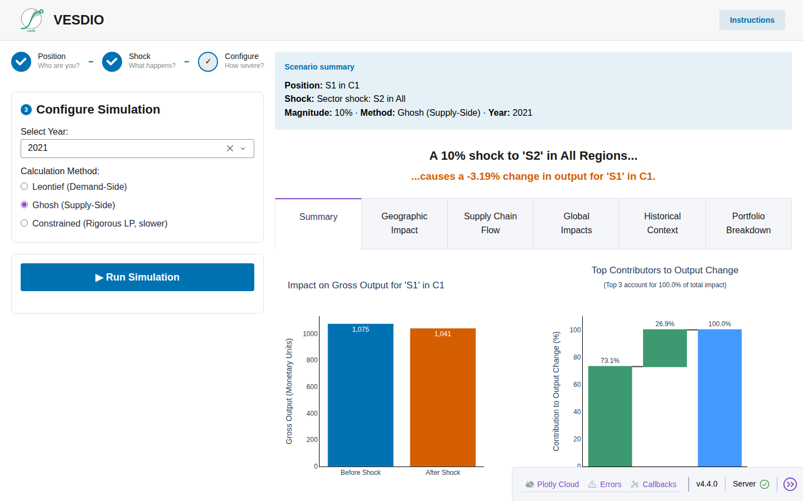
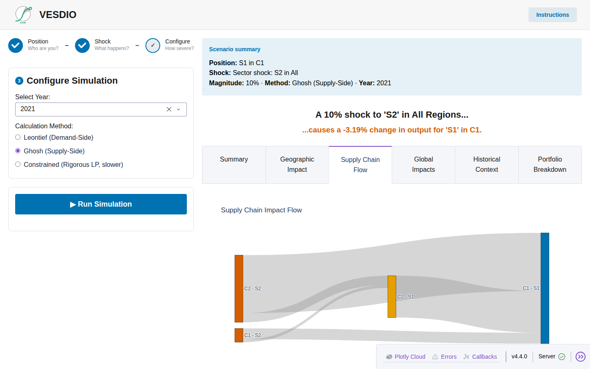
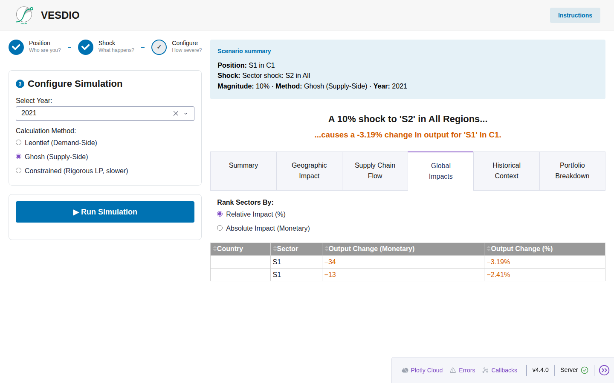
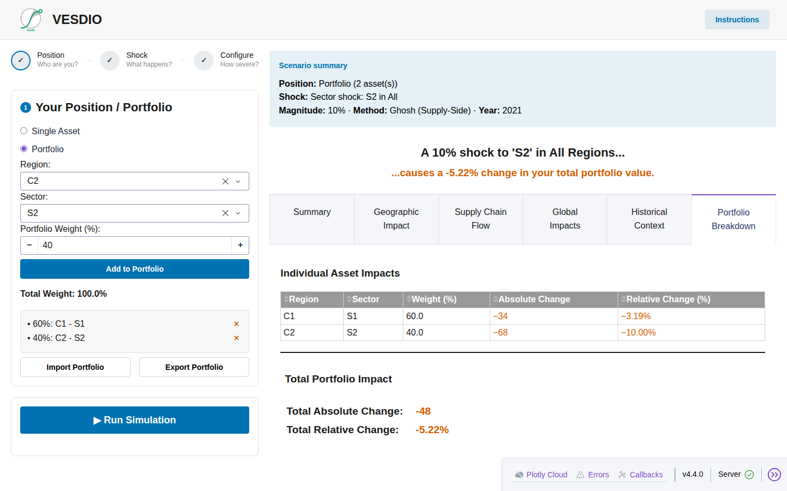
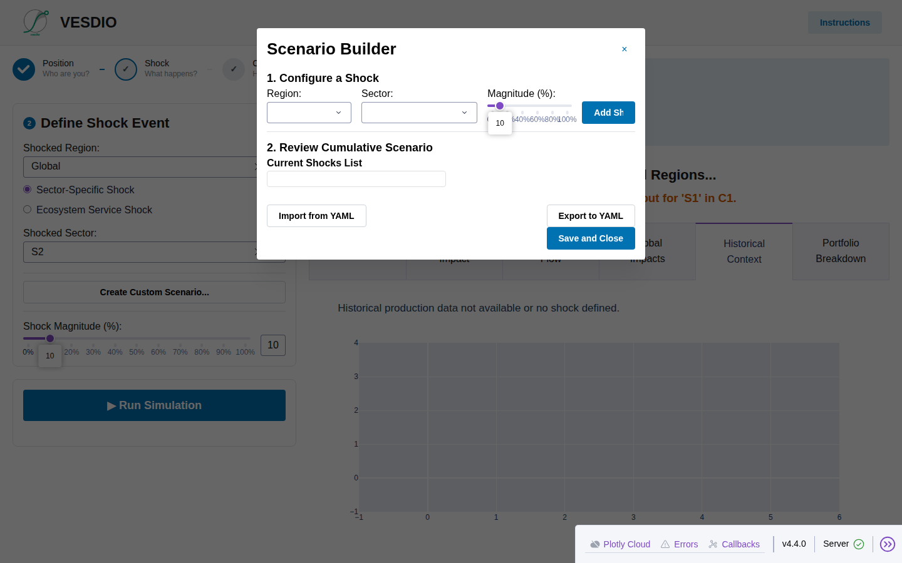
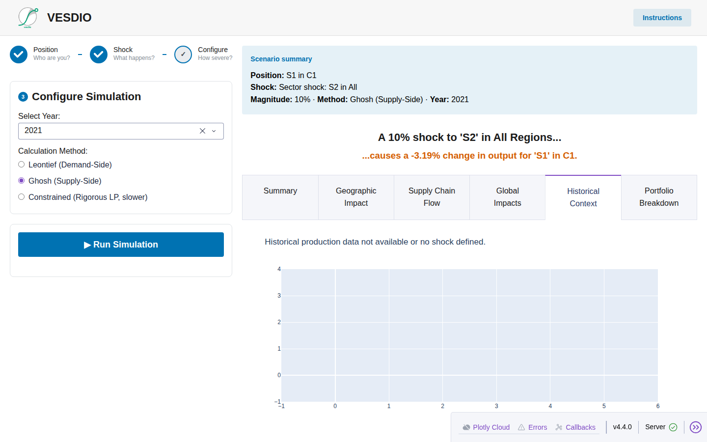

Valuing Ecosystem Services Dependencies with Input-Output modeling.
An experimental desktop tool for scenario ("what if") analysis of how ecosystem services disruption — water stress, pollination decline, and more — propagates through global supply chains to affect production in your business sector, region, or investment portfolio. Built to support TNFD-style nature-dependency disclosures with a concrete, quantitative starting point.
Free, per-OS executables built automatically from the source repository.
Each download links to the latest GitHub release. The executable itself is small — it does not bundle the EXIOBASE dataset. First launch downloads the reference dataset (~300–500 MB) automatically into a per-user data folder, verified by checksum; after that it runs fully offline. If the download can't complete, the app still starts using a small synthetic dataset so it's never left broken.
A guided three-step wizard on the left, rich results on the right.
Tell VESDIO who you are: a single asset (a region + sector, e.g. car manufacturing in Germany) or a diversified portfolio of multiple region/sector assets weighted up to 100%.
Define what happens: an ecosystem-service shock (e.g. water stress, pollination decline) mapped via ENCORE to affected sectors, a specific sector-region shock, or a custom multi-shock scenario.
Choose the reference year and the simulation method — Leontief (demand-side) or Ghosh (supply-side) — then run the simulation.
Before/after output bars and a waterfall chart showing which upstream regions and sectors drove the change.
A map view of where the impact on your position is concentrated globally.
A Sankey diagram tracing how the shock flows through intermediate sectors and regions to reach you.
A sortable table ranking every affected sector-region by relative or absolute output change.
Compares your scenario's magnitude against historical production trends for the affected sector, where data is available.
In portfolio mode, a per-asset breakdown plus the aggregated, weighted impact on the whole portfolio.
Combine multiple shocks across different region-sector pairs in a single run — e.g. a fruit & vegetable cultivation shock in the EU plus a hydropower shock in China, simultaneously.
Save a scenario or portfolio to a YAML file and reload it later, or share it with a colleague, without re-clicking through the wizard.
Build an internationally diversified portfolio from multiple region/sector assets and see the cumulative, weighted impact of a shock across all of them.
Captured against the app's built-in synthetic dummy dataset (a 2-country, 2-sector economy) — see the caption on each for what it shows.






These are placeholders from the synthetic dummy dataset, not real EXIOBASE output — see website/assets/screenshots/README.md for how to regenerate with real data. The Geographic Impact map view is not pictured here: it needs real ISO3 region codes to render and stays blank on the 2-region dummy dataset.
EXIOBASE global input-output data, ENCORE materiality mapping, and a standard multi-regional input-output shock model.
Full methodology, data-source citations, and formulas are documented in the repository README.
VESDIO is highly experimental and its methods are not empirically or scientifically validated via peer review. Treat every result as a rough, directional indicator — not a number to put in a disclosure filing unmodified.
VESDIO is not (yet) endorsed by, or part of the recommended toolkit for, TNFD disclosures.